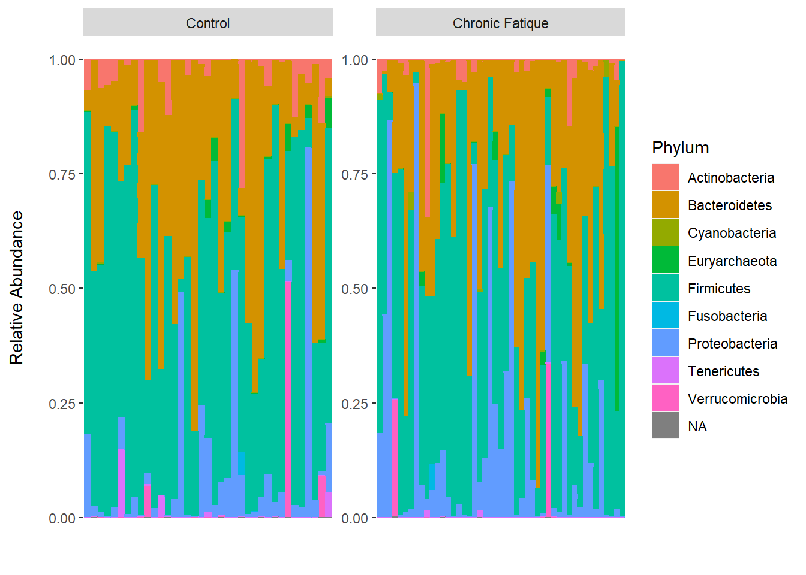
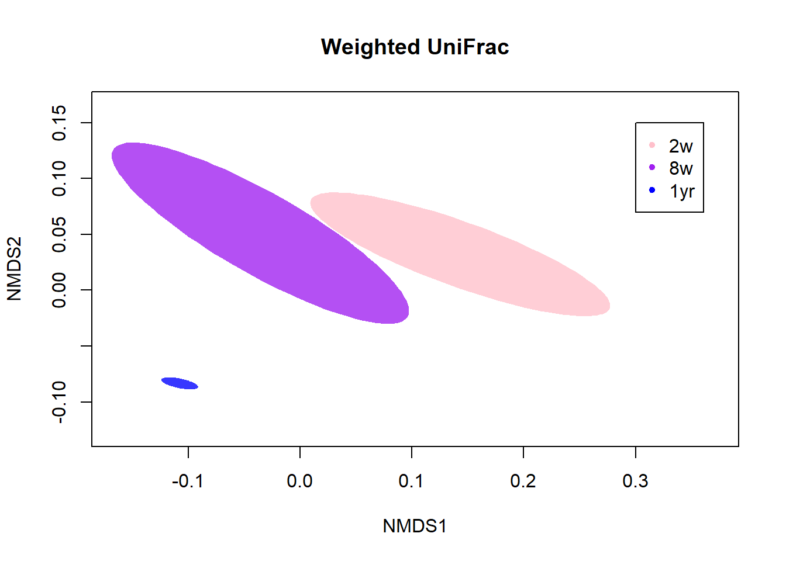
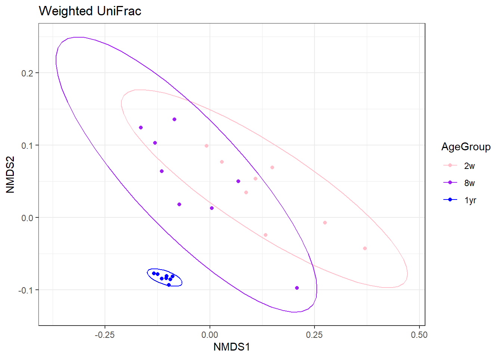

6 Free space
This was the fifth assignment for our portfolio. We had/have to fill 32 hours learning something new that will be useful for our internship next year and possibly our job.
- Uitzoeken welke automatiseringen er op microbiologische labs worden gebruikt.
- Metagenomics? https://bmcbioinformatics.biomedcentral.com/articles/10.1186/s12859-020-03933-4 (megaR package) http://web.evolbio.mpg.de/~wang/Site/R_tutorial_files/16S%20Metagenomic%20Analysis%20Tutorial.pdf (random tutorial) https://www.mcs.anl.gov/~braithwaite/matR/docs-and-pubs/matR-user-manual.pdf (matR package) https://rpubs.com/jrandall7/EICC16s (phyloseq) https://cran.r-project.org/web/packages/microbial/microbial.pdf (microbial package) https://bioconductor.org/help/course-materials/2017/BioC2017/Day1/Workshops/Microbiome/MicrobiomeWorkflowII.html (aritkel over microbioom analyse workflow)
https://www.nicholas-ollberding.com/post/introduction-to-the-statistical-analysis-of-microbiome-data-in-r/ (soort course over de analyse van microbioom data) https://rstudio-pubs-static.s3.amazonaws.com/268156_d3ea37937f4f4469839ab6fa2c483842.html (ook een course over de analyse van microbiota data) https://grunwaldlab.github.io/analysis_of_microbiome_community_data_in_r/04--manipulating.html (nog een course) - Python?
6.1 Course: Introduction to the statistical analysis of microbiome data in R
Link to the course: https://www.nicholas-ollberding.com/post/introduction-to-the-statistical-analysis-of-microbiome-data-in-r/
In this course, we examined the differences in microbiota between patients with and without chronic fatigue syndrome.
The aspects that were looked at were:
Taxonomic relative abundance
Hierarchal clustering
Alpha-diversity (microbiome diversity in just one sample)
Beta-divesity (microbiome diversity in two or more samples)
Diffrential abundance testing
Predicting class labels
.cran_packages <- c("tidyverse", "cowplot", "picante", "vegan", "HMP", "dendextend", "rms", "devtools")
.bioc_packages <- c("phyloseq", "DESeq2", "microbiome", "metagenomeSeq", "ALDEx2")
.inst <- .cran_packages %in% installed.packages()
if(any(!.inst)) {
install.packages(.cran_packages[!.inst])
}
if (!requireNamespace("BiocManager", quietly = TRUE))
install.packages("BiocManager")
BiocManager::install(.bioc_packages, version = "3.15") #Changed 3.9 to 3.15
devtools::install_github("adw96/breakaway")
devtools::install_github(repo = "malucalle/selbal") #changed UVic-omics to malucallelibrary(tidyverse)
library(phyloseq)
library(DESeq2)
library(microbiome)
library(vegan)
library(picante)
library(ALDEx2)
library(metagenomeSeq)
library(HMP)
library(dendextend)
library(selbal)
library(rms)
library(breakaway)# Reading in the data
ps <- readRDS("Data/Data_raw/ps_giloteaux_2016.rds")
# Sorting the samples on total read count
sort(phyloseq::sample_sums(ps))## ERR1331827 ERR1331852 ERR1331856 ERR1331869 ERR1331833 ERR1331797 ERR1331786
## 2707 3031 3117 5083 5245 5307 5696
## ERR1331818 ERR1331792 ERR1331803 ERR1331793 ERR1331819 ERR1331858 ERR1331807
## 5733 6463 6512 6622 6900 6913 7121
## ERR1331815 ERR1331821 ERR1331843 ERR1331795 ERR1331846 ERR1331811 ERR1331845
## 7179 7272 7284 7314 7569 7665 7815
## ERR1331842 ERR1331838 ERR1331855 ERR1331824 ERR1331832 ERR1331804 ERR1331868
## 7911 8102 8115 8148 8186 8236 8612
## ERR1331831 ERR1331859 ERR1331790 ERR1331789 ERR1331837 ERR1331857 ERR1331801
## 8840 9016 9085 9184 9731 9966 11173
## ERR1331841 ERR1331861 ERR1331820 ERR1331854 ERR1331863 ERR1331806 ERR1331787
## 11442 11826 12940 13029 13094 13095 13690
## ERR1331853 ERR1331851 ERR1331836 ERR1331835 ERR1331802 ERR1331799 ERR1331847
## 14113 14365 14488 14753 14799 14833 15290
## ERR1331834 ERR1331817 ERR1331809 ERR1331828 ERR1331813 ERR1331798 ERR1331816
## 15367 15460 16162 16494 16749 16947 17015
## ERR1331830 ERR1331785 ERR1331823 ERR1331865 ERR1331848 ERR1331800 ERR1331867
## 17457 17557 18506 19013 19257 19443 19732
## ERR1331870 ERR1331810 ERR1331825 ERR1331866 ERR1331871 ERR1331849 ERR1331860
## 19783 19909 20069 20760 20862 21540 21553
## ERR1331808 ERR1331872 ERR1331812 ERR1331850 ERR1331791 ERR1331788 ERR1331796
## 21713 22339 22518 22639 23246 23751 23792
## ERR1331840 ERR1331826 ERR1331822 ERR1331862 ERR1331864 ERR1331829 ERR1331844
## 24752 28186 28556 31064 44533 51918 57214
## ERR1331805 ERR1331839 ERR1331794
## 59355 61206 65941# Removing (samples with?) less than 5000 reads
(ps <- phyloseq::subset_samples(ps, phyloseq::sample_sums(ps) > 5000))## phyloseq-class experiment-level object
## otu_table() OTU Table: [ 138 taxa and 84 samples ]
## sample_data() Sample Data: [ 84 samples by 22 sample variables ]
## tax_table() Taxonomy Table: [ 138 taxa by 7 taxonomic ranks ]
## phy_tree() Phylogenetic Tree: [ 138 tips and 136 internal nodes ]
## refseq() DNAStringSet: [ 138 reference sequences ]# Removing the OTU's that were only present in the removed samples
(ps <- phyloseq::prune_taxa(phyloseq::taxa_sums(ps) > 0, ps))## phyloseq-class experiment-level object
## otu_table() OTU Table: [ 138 taxa and 84 samples ]
## sample_data() Sample Data: [ 84 samples by 22 sample variables ]
## tax_table() Taxonomy Table: [ 138 taxa by 7 taxonomic ranks ]
## phy_tree() Phylogenetic Tree: [ 138 tips and 136 internal nodes ]
## refseq() DNAStringSet: [ 138 reference sequences ]# Assigning a new metadata field
phyloseq::sample_data(ps)$Status <- ifelse(phyloseq::sample_data(ps)$Subject == "Patient", "Chronic Fatique", "Control")
phyloseq::sample_data(ps)$Status <- factor(phyloseq::sample_data(ps)$Status, levels = c("Control", "Chronic Fatique"))
ps %>% sample_data %>% dplyr::count(Status)## $Status
## [1] Control Chronic Fatique
## Levels: Control Chronic Fatique
##
## $n
## [1] 37 47
##
## attr(,"row.names")
## [1] 1 2
## attr(,"class")
## [1] "sample_data"
## attr(,"class")attr(,"package")
## [1] "phyloseq"
## attr(,".S3Class")
## [1] "data.frame"# Counting all the phyla in the dataset
table(phyloseq::tax_table(ps)[, "Phylum"])##
## Actinobacteria Bacteroidetes Cyanobacteria Euryarchaeota Firmicutes
## 7 11 2 1 105
## Fusobacteria Proteobacteria Tenericutes Verrucomicrobia
## 1 7 2 1# Convert the samples to relative abundances
ps_rel_abund = phyloseq::transform_sample_counts(ps, function(x){x / sum(x)})
phyloseq::otu_table(ps)[1:5, 1:5] # Before we converted it to relative abundances## OTU Table: [5 taxa and 5 samples]
## taxa are rows
## ERR1331793 ERR1331872 ERR1331819 ERR1331794 ERR1331851
## OTU1 2 581 347 916 10498
## OTU2 371 46 0 233 301
## OTU3 1189 81 637 199 0
## OTU4 0 172 246 0 372
## OTU5 308 44 143 155 221phyloseq::otu_table(ps_rel_abund)[1:5, 1:5] # After we calculated the relative abundances## OTU Table: [5 taxa and 5 samples]
## taxa are rows
## ERR1331793 ERR1331872 ERR1331819 ERR1331794 ERR1331851
## OTU1 0.0003020236 0.026008326 0.05028986 0.013891206 0.73080404
## OTU2 0.0560253700 0.002059179 0.00000000 0.003533462 0.02095371
## OTU3 0.1795530051 0.003625946 0.09231884 0.003017849 0.00000000
## OTU4 0.0000000000 0.007699539 0.03565217 0.000000000 0.02589628
## OTU5 0.0465116279 0.001969649 0.02072464 0.002350586 0.01538462# Plotting the relative abundances, devided by the two groups
phyloseq::plot_bar(ps_rel_abund, fill = "Phylum")+
geom_bar(aes(color = Phylum, fill = Phylum), stat = "identity", position = "stack")+
labs(x = "", y = "Relative Abundance\n")+
facet_wrap(~ Status, scales = "free")+
theme(panel.background = element_blank(),
axis.text.x = element_blank(),
axis.ticks.x = element_blank())
# Sorting the taxa by their relative abundance
sort(ps_rel_abund@tax_table[["Phylum"]], decreasing = TRUE) %>% phyloseq::plot_bar(fill = "Phylum")+
geom_bar(aes(color = Phylum, fill = Phylum), stat = "identity", position = "stack")+
labs(x = "", y = "Relative Abundance\n")+
facet_wrap(~ Status, scales = "free")+
theme(panel.background = element_blank(),
axis.text.x = element_blank(),
axis.ticks.x = element_blank())# Grouping the taxa according to phylum and renaming the groups
ps_phylum <- phyloseq::tax_glom(ps, "Phylum")
phyloseq::taxa_names(ps_phylum) <- phyloseq::tax_table(ps_phylum)[, "Phylum"]
phyloseq::otu_table(ps_phylum)[1:5, 1:5]## OTU Table: [5 taxa and 5 samples]
## taxa are rows
## ERR1331793 ERR1331872 ERR1331819 ERR1331794 ERR1331851
## Bacteroidetes 1903 878 1837 1969 11776
## Proteobacteria 119 3315 468 62358 319
## Firmicutes 4319 14429 3548 1609 2207
## Actinobacteria 30 976 17 0 58
## Cyanobacteria 246 0 0 0 0# Melting the data and making the boxplots
phyloseq::psmelt(ps_phylum) %>%
ggplot(data = ., aes(x = Status, y = Abundance))+
geom_boxplot(outlier.shape = NA)+
geom_jitter(aes(colour = OTU), height = 0, width = 0.2)+
labs(x = "", y = "Abundance\n")+
facet_wrap(~ OTU, scales = "free")
# Making two subsets
controls <- phyloseq::subset_samples(ps_phylum, Status == "Control")
cf <- phyloseq::subset_samples(ps_phylum, Status = "Chronic Fatigue")
# Looking at the OTU tables
control_otu <- data.frame(phyloseq::otu_table(controls))
cf_otu <- data.frame(phyloseq::otu_table(cf))
# Grouping the rare phyla to improve testing
control_otu <- control_otu %>% t(.) %>% as.data.frame(.) %>% mutate(Other = Cyanobacteria + Euryarchaeota + Tenericutes + Verrucomicrobia + Fusobacteria) %>% dplyr::select(-Cyanobacteria, -Euryarchaeota, -Tenericutes, -Verrucomicrobia, -Fusobacteria)
cf_otu <- cf_otu %>% t(.) %>% as.data.frame(.) %>% mutate(Other = Cyanobacteria + Euryarchaeota + Tenericutes + Verrucomicrobia + Fusobacteria) %>% dplyr::select(-Cyanobacteria, -Euryarchaeota, -Tenericutes, -Verrucomicrobia, -Fusobacteria)
# Performing the HMP test
group_data <- list(control_otu, cf_otu)
(xdc <- HMP::Xdc.sevsample(group_data))## $`Xdc statistics`
## [1] -0.3510664
##
## $`p value`
## [1] 11 - pchisq(0.2769004, 5) # Looking at the Chi-Squared distribution## [1] 0.9980551Since the P-value of the HMP test is nearly 1, we cannot reject the null hypothesis that there is no statistical significant distribution of phyla between the two groups.
Looking at the hierarchical clustering in the samples
# Extracting the OTU table
ps_rel_otu <- data.frame(phyloseq::otu_table(ps_rel_abund))
ps_rel_otu <- t(ps_rel_otu)
# Computing the Bray-Curtis dissimilarity
bc_dist <- vegan::vegdist(ps_rel_otu, method = "bray")
# Generating a matrix with the dissimilarities
as.matrix(bc_dist)[1:5, 1:5]## ERR1331793 ERR1331872 ERR1331819 ERR1331794 ERR1331851
## ERR1331793 0.0000000 0.8801040 0.5975550 0.9767218 0.8684629
## ERR1331872 0.8801040 0.0000000 0.7590766 0.9596181 0.9206484
## ERR1331819 0.5975550 0.7590766 0.0000000 0.9556656 0.7810736
## ERR1331794 0.9767218 0.9596181 0.9556656 0.0000000 0.9693291
## ERR1331851 0.8684629 0.9206484 0.7810736 0.9693291 0.0000000# Saving it as a dendrogram
ward <- as.dendrogram(hclust(bc_dist, method = "ward.D2"))
# Adding color coding
meta <- data.frame(phyloseq::sample_data(ps_rel_abund))
colorCode <- c(Control = "red", `Chronic Fatigue` = "blue")
labels_colors(ward) <- colorCode[meta$Status][order.dendrogram(ward)]
# Plotting the dendrogram
plot(ward)
plot_heatmap(cf)
plot_heatmap(controls)Looking at the alpha diversity
Alpha diversity looks at the diversity within a sample and how the observed OTU’s are distributed.
# Plotting the observed richness
ggplot(data = data.frame("total_reads" = phyloseq::sample_sums(ps),
"observed" = phyloseq::estimate_richness(ps, measures = "Observed")[, 1]),
aes(x = total_reads, y = observed)) +
geom_point() +
geom_smooth(method="lm", se = FALSE) +
labs(x = "\nTotal Reads", y = "Observed richness\n")
Now we’re going to subsample the reads, plot them and test for group differences
# Subsample reads
(ps_rare <- phyloseq::rarefy_even_depth(ps, rngseed = 123, replace = FALSE))## phyloseq-class experiment-level object
## otu_table() OTU Table: [ 138 taxa and 84 samples ]
## sample_data() Sample Data: [ 84 samples by 23 sample variables ]
## tax_table() Taxonomy Table: [ 138 taxa by 7 taxonomic ranks ]
## phy_tree() Phylogenetic Tree: [ 138 tips and 136 internal nodes ]
## refseq() DNAStringSet: [ 138 reference sequences ]head(phyloseq::sample_sums(ps_rare))## ERR1331793 ERR1331872 ERR1331819 ERR1331794 ERR1331851 ERR1331834
## 5083 5083 5083 5083 5083 5083# Making a dataframe with the adiv measures, another package to analyse and measure biodiversity
adiv <- data.frame("Observed" = phyloseq::estimate_richness(ps_rare, measures = "Observed"),
"Shannon" = phyloseq::estimate_richness(ps_rare, measures = "Shannon"),
"PD" = picante::pd(samp = data.frame(t(data.frame(phyloseq::otu_table(ps_rare)))), include.root = FALSE, tree=phyloseq::phy_tree(ps_rare))[, 1],
"Status" = phyloseq::sample_data(ps_rare)$Status) # Zelf "include.root = FALSE" toegevoegd, anders kreeg ik steeds een error
head(adiv)## Observed Shannon PD Status
## ERR1331793 53 2.7462377 20.566952 Chronic Fatique
## ERR1331872 52 2.7527053 21.258691 Control
## ERR1331819 70 3.2378006 21.640313 Control
## ERR1331794 27 0.3761523 8.275154 Chronic Fatique
## ERR1331851 45 1.3387308 14.649204 Chronic Fatique
## ERR1331834 54 2.8883445 20.957612 Control# Plotting the adiv measures
adiv %>% gather(key = metric, value = value, c("Observed", "Shannon", "PD")) %>%
mutate(metric = factor(metric, levels = c("Observed", "Shannon", "PD"))) %>%
ggplot(aes(x = Status, y = value)) +
geom_boxplot(outlier.color = NA) +
geom_jitter(aes(color = Status), height = 0, width = 0.2) +
labs(x = "", y = "") +
facet_wrap(~metric, scales = "free") +
theme(legend.position = "none")
# Summarising the data
adiv %>% group_by(Status) %>%
dplyr::summarise(median_observed = median(Observed),
median_shannon = median(Shannon),
median_pd = median(PD))## # A tibble: 2 × 4
## Status median_observed median_shannon median_pd
## <fct> <dbl> <dbl> <dbl>
## 1 Control 49 2.40 18.1
## 2 Chronic Fatique 46 2.30 17.0# Performing the Wilcoxon tests for the three estimates
wilcox.test(Observed ~ Status, data = adiv, exact = FALSE, conf.int = TRUE)##
## Wilcoxon rank sum test with continuity correction
##
## data: Observed by Status
## W = 1007.5, p-value = 0.2146
## alternative hypothesis: true location shift is not equal to 0
## 95 percent confidence interval:
## -1.000059 5.000002
## sample estimates:
## difference in location
## 2.000087wilcox.test(Shannon ~ Status, data = adiv, conf.int = TRUE)##
## Wilcoxon rank sum exact test
##
## data: Shannon by Status
## W = 1037, p-value = 0.1329
## alternative hypothesis: true location shift is not equal to 0
## 95 percent confidence interval:
## -0.04346366 0.39218192
## sample estimates:
## difference in location
## 0.1421467wilcox.test(PD ~ Status, data = adiv, conf.int = TRUE)##
## Wilcoxon rank sum exact test
##
## data: PD by Status
## W = 998, p-value = 0.2503
## alternative hypothesis: true location shift is not equal to 0
## 95 percent confidence interval:
## -0.7340479 2.1737379
## sample estimates:
## difference in location
## 0.7063854Looking at the beta diversity
Beta diversity looks at the diversity between samples and how it’s similar or dissimilar.
# Transforming the Total Read Counts according to the Centered Log Ratio method
(ps_clr <- microbiome::transform(ps, "clr"))## phyloseq-class experiment-level object
## otu_table() OTU Table: [ 138 taxa and 84 samples ]
## sample_data() Sample Data: [ 84 samples by 23 sample variables ]
## tax_table() Taxonomy Table: [ 138 taxa by 7 taxonomic ranks ]
## phy_tree() Phylogenetic Tree: [ 138 tips and 136 internal nodes ]
## refseq() DNAStringSet: [ 138 reference sequences ]phyloseq::otu_table(ps)[1:5, 1:5] # Old OTU table## OTU Table: [5 taxa and 5 samples]
## taxa are rows
## ERR1331793 ERR1331872 ERR1331819 ERR1331794 ERR1331851
## OTU1 2 581 347 916 10498
## OTU2 371 46 0 233 301
## OTU3 1189 81 637 199 0
## OTU4 0 172 246 0 372
## OTU5 308 44 143 155 221phyloseq::otu_table(ps_clr)[1:5, 1:5] # New OTU table## OTU Table: [5 taxa and 5 samples]
## taxa are rows
## ERR1331793 ERR1331872 ERR1331819 ERR1331794 ERR1331851
## OTU1 1.289544 5.812706 5.615063 6.230204 9.467837
## OTU2 6.485240 3.280355 -3.079591 4.863001 5.916398
## OTU3 7.649802 3.844401 6.222432 4.705673 -1.903003
## OTU4 -2.317399 4.596219 5.271139 -1.178342 6.128105
## OTU5 6.299168 3.236089 4.728822 4.456584 5.607596# The value are now the dominance for each taxa relative to the geometric mean of all taxa on the logarithmic scale
6.2 Course: Microbiota analysis in R
Link to the course: https://rstudio-pubs-static.s3.amazonaws.com/268156_d3ea37937f4f4469839ab6fa2c483842.html
In this course, we will be looking at the fecal bacterial microbiota of 8 calves at ages 2 weeks, 8 weeks and 1 year old and correlating them with variables such as weight gain and gastrointestinal short chain fatty acids, SCFA.
# install.packages("ape")
library(ape)
library(dplyr)
library(ggplot2)
library(gplots)
library(lme4)
library(phangorn)
library(plotly)
library(tidyr)
library(here)
library(vegan)
# install.packages("VennDiagram")
library(VennDiagram)
# Installed Java from: https://www.java.com/en/download/manual.jsp
# Installed Java JDk from: https://www.oracle.com/java/technologies/downloads/#jdk18-windows
# install.packages("rJava")
library(rJava)
# install.packages("venneuler")
library(venneuler)
if (!require("BiocManager", quietly = TRUE))
install.packages("BiocManager")
# BiocManager::install(version = "3.15") # Instead of source("https://bioconductor.org/biocLite.R")
# BiocManager::install("phyloseq") # Instead of biocLite("phyloseq") ?# Downloaded the data from: https://github.com/kdillmcfarland/workshops_UW_Madison/tree/master/Microbiota_analysis_R/Data
OTU = read.table("Data/example.final.an.unique_list.0.03.norm.shared.txt", header = TRUE, sep = "\t")
tax = read.table("Data/example.final.an.unique_list.0.03.cons.taxonomy.txt", header = TRUE, sep = "\t")
meta = read.table("Data/example.metadata.txt", header = TRUE, row.names = 1, sep = "\t")
SCFA = read.table("Data/example.SCFA.txt", header = TRUE, row.names = 1, sep = "\t")# Setting the "Group" column as row names in the OTU dataset
row.names(OTU) = OTU$Group
# Removing the columns that are not OTU counts
OTU.clean = OTU[,-which(names(OTU) %in% c("label", "numOtus", "Group"))]
# Setting the "OTU" column as row names in the taxonomy table
row.names(tax) = tax$OTU
# Removing the OTU's that aren't present in the OTU.clean dataset
tax.clean = tax[row.names(tax) %in% colnames(OTU.clean),]
# Separating the taxonomy table so each level has its own column
tax.clean = separate(tax.clean, Taxonomy, into = c("Domain", "Phylum", "Class", "Order", "Family", "Genus", "Species", "Strain"), sep = ";")
# Removing the "Size", "Strain" and "OTU" columns because these are now row names
tax.clean = tax.clean[,-which(names(tax.clean) %in% c("Size", "Strain", "OTU"))]
# Making sure the three datasets have samples in the same order
OTU.clean = OTU.clean[order(row.names(OTU.clean)),]
meta = meta[order(row.names(meta)),]
SCFA = SCFA[order(row.names(SCFA)),]
# set.seed to make the analysis reproducible
set.seed(8765)Looking at the alpha diversity
Alpha diversity is the diversity within a sample. It looks at richness, which is the amount of OTU’s in each sample, and at evenness, which is how evenly the different OTU’s are distributed within the sample.
# Creating a 2x2 plot environment so we can see all 4 metrics at once
par(mfrow = c(2,2))
# Plotting the four metrics
hist(meta$shannon, main = "Shannon diversity", xlab = "", breaks = 10)
hist(meta$simpson, main = "Simpson diversity", xlab = "", breaks = 10)
hist(meta$chao, main = "Chao richness", xlab = "", breaks = 15)
hist(meta$ace, main = "ACE richness", xlab = "", breaks = 15)
None of the data are normally distributed. Simpson diversity is very often skewed as seen in this histogram, so we’ll calculate 1/Simpson and plot the metrics again.
# Creating a 2x2 environment
par(mfrow = c(2,2))
# Plotting the four metrics again
hist(meta$shannon, main = "Shannon diversity", xlab = "", breaks = 10)
hist(1/meta$simpson, main = "Inverse Simpson diversity", xlab = "", breaks = 10)
hist(meta$chao, main = "Chao richness", xlab = "", breaks = 15)
hist(meta$ace, main = "ACE richness", xlab = "", breaks = 15)
Now the Simpson diversity is distributed similarly to the other richness metrics.
Next, we’ll test the four metrics for normal distribution.
shapiro.test(meta$shannon)##
## Shapiro-Wilk normality test
##
## data: meta$shannon
## W = 0.91511, p-value = 0.0456shapiro.test(1/meta$simpson)##
## Shapiro-Wilk normality test
##
## data: 1/meta$simpson
## W = 0.74821, p-value = 4.69e-05shapiro.test(meta$chao)##
## Shapiro-Wilk normality test
##
## data: meta$chao
## W = 0.80636, p-value = 0.0003749shapiro.test(meta$ace)##
## Shapiro-Wilk normality test
##
## data: meta$ace
## W = 0.83017, p-value = 0.0009573
None of the richness metrics are normally distributed, which was to be expected from the graphs we’ve seen. So we cannot run any tests that assume the data is normally distributed.
For illustration purposes, we’ll run the ANOVA test with the Shannon’s diversity because that’s the closest to normally distributed. We’ll look at if age impacts the Shannon diversity of the fecal microbiota.
aov.shannon.age = aov(shannon ~ AgeGroup, data = meta)
summary(aov.shannon.age)## Df Sum Sq Mean Sq F value Pr(>F)
## AgeGroup 2 42.98 21.489 103.4 1.35e-11 ***
## Residuals 21 4.36 0.208
## ---
## Signif. codes: 0 '***' 0.001 '**' 0.01 '*' 0.05 '.' 0.1 ' ' 1
We’ll run Tukey’s honest significance test to do pairwise comparisons between groups and correct for multiple comparisons.
TukeyHSD(aov.shannon.age)## Tukey multiple comparisons of means
## 95% family-wise confidence level
##
## Fit: aov(formula = shannon ~ AgeGroup, data = meta)
##
## $AgeGroup
## diff lwr upr p adj
## 2w-1yr -3.270063 -3.8446230 -2.695503 0.0e+00
## 8w-1yr -1.830903 -2.4054628 -1.256342 2.0e-07
## 8w-2w 1.439160 0.8646001 2.013720 8.5e-06
It’s clear that all age groups have significantly different diversity. In a plot, we can clearly see that diversity increases with ages.
# Re-ordering the groups
meta$AgeGroup.ord = factor(meta$AgeGroup, c("2w", "8w", "1yr"))
# Returning the plot area to 1x1
par(mfrow = c(1,1))
# Plotting the diversity
boxplot(shannon ~ AgeGroup.ord, data = meta,
ylab = "Shannon's diversity",
xlab = "Age group") # Added the xlab myself because it looks better :)
To illustrate some non-parametric tests, we’ll use Chao’s richness estimate. Age is categorical, so we’ll use Kruskal-Wallis.
kruskal.test(chao ~ AgeGroup, data = meta)##
## Kruskal-Wallis rank sum test
##
## data: chao by AgeGroup
## Kruskal-Wallis chi-squared = 19.28, df = 2, p-value = 6.507e-05
We can also test pairwise within age groups with Wilcoxon Rank Sum Tests.
pairwise.wilcox.test(meta$chao, meta$AgeGroup, p.adjust.method = "fdr")##
## Pairwise comparisons using Wilcoxon rank sum exact test
##
## data: meta$chao and meta$AgeGroup
##
## 1yr 2w
## 2w 0.00023 -
## 8w 0.00023 0.00186
##
## P value adjustment method: fdr
Just like the diversity, richness also increases with age.
# Creating a 1x1 plot environment
par(mfrow = c(1,1))
# Plotting the richness
boxplot(chao ~ AgeGroup.ord, data = meta,
ylab = "Chao richness",
xlab = "Age group") # Again, added the xlab myself for aesthetics :)